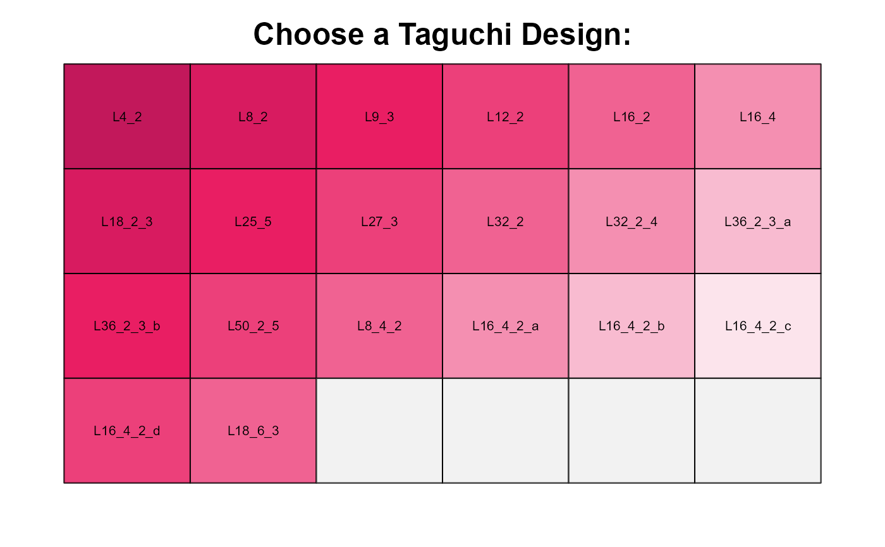
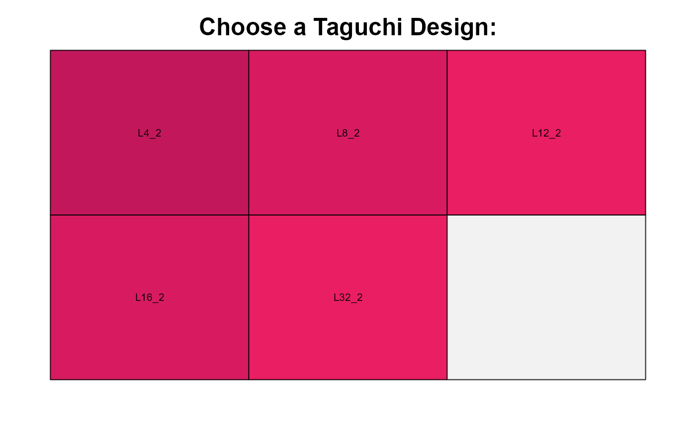

taguchiChoose: Taguchi Designs
taguchiChoose.RdShows a matrix of possible taguchi designs
Usage
taguchiChoose(
factors1 = 0,
factors2 = 0,
level1 = 0,
level2 = 0,
ia = 0,
col = 2,
randomize = TRUE,
replicates = 1
)Arguments
- factors1
Integer number of factors on level1. By default set to `0`.
- factors2
Integer number of factors on level2. By default set to `0`.
- level1
Integer number of levels on level1. By default set to `0`.
- level2
Integer number of levels on level2. By default set to `0`.
- ia
Integer number of interactions. By default set to `0`.
- col
Select the color scheme for the selection matrix: use
1for blue,2for pink (default), and3for a variety of colors.- randomize
A logical value (
TRUE/FALSE) that specifies whether to randomize the RunOrder of the design. By default,randomizeis set toTRUE.- replicates
An integer specifying the number of replicates for each run in the design.
Details
taguchiChoose returns possible taguchi designs.
Specifying the number of factor1 factors with level1 levels (factors1 = 2, level1 = 3 means 2 factors with 3 factor levels) and factor2 factors with level2 levels and desired interactions one or more taguchi designs are suggested.
If all parameters are set to 0, a matrix of possible taguchi designs is shown.
See also
facDesig: for 2^k factorial designs.rsmDesign: for response surface designs.fracDesig: for fractional factorial design.gageRRDesig: for gage designs.
Examples
tdo1 <- taguchiChoose()

#>
#> Choose a taguchi design by clicking into the appropriate field
#> Waiting for your selection:
#>
tdo1 <- taguchiChoose(factors1 = 3, level1 = 2)
#> 3 factors on 2 levels and 0 factors on 0 levels with 0 desired interactions to be estimated
#>

#>
#> Choose a possible taguchi design by clicking into the appropriate field
#> Waiting for your selection:
#>